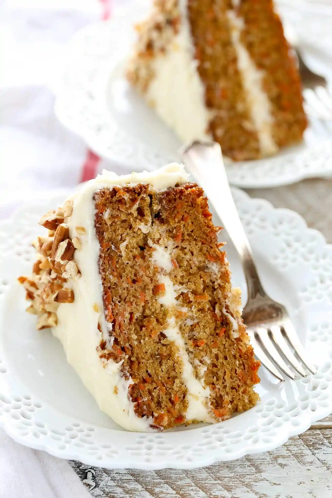

The Best Carrot Cake Recipe

Ingredients
- 2 cups (250 grams) all-purpose flour
- 2 teaspoons baking powder
- 1 teaspoon baking soda
- 1 and 1/2 teaspoons ground cinnamon
- 1/2 teaspoon ground ginger
- 1/4 teaspoon ground nutmeg
- 1/2 teaspoon salt
- 3/4 cup (180ml) canola or vegetable oil
- 4 large eggs room temperature
- 1 and 1/2 cups (300 grams) light brown sugar
- 1/2 cup (100 grams) granulated sugar
- 1/2 cup (125 grams) unsweetened applesauce
- 1 teaspoon pure vanilla extract
- 3 cups (300 grams) grated carrots, lightly packed
Directions
- Preheat oven to 350°F (177°C). Spray two 9-inch round cake pans well with non stick
cooking spray (you can also line the bottom of each pan with parchment paper for easier removal)
and set aside.
- In a large mixing bowl, whisk together the flour, baking powder, baking soda, cinnamon,
ginger, nutmeg, and salt until well combined. Set aside.
- In a separate large mixing bowl, whisk together the oil, eggs, brown sugar, granulated sugar,
applesauce, and vanilla extract until fully combined. Add the grated carrots into the wet
ingredients and mix until well combined.
- Pour the wet ingredients into the dry ingredients and mix with a whisk or rubber spatula until just
combined, making sure not to over mix the batter.
- Pour the cake batter evenly between both prepared cake pans. Bake at 350°F for 30-35 minutes or until
the tops of the cakes are set and a toothpick inserted into the center of each one comes out clean.
Remove from the oven, transfer to a wire rack, and allow to cool in the pans for about 20-25 minutes.
Once the cakes have cooled, remove from the pans and return the cakes to the wire rack to finish cooling.
Return to home page